Префектура Киото · Гион · медитация
Храм Рёсоку-ин в Киото: монах Торё Ито о медитации, которую можно взять с собой домой
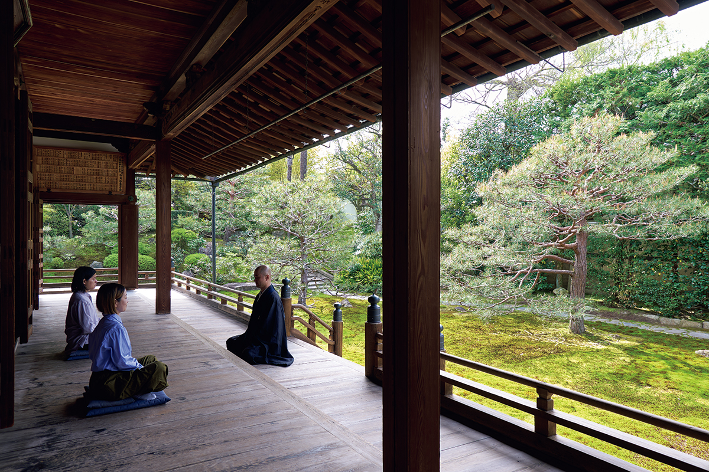
Рёсоку-ин стоит посреди Гиона, куда съезжаются туристы со всего мира, но за его воротами тихо так, что в это трудно поверить. Заместитель настоятеля Торё Ито рассказывает, как медитировать без строгих правил: в храме, дома и даже за мытьём посуды.
Храм
Тишина посреди Гиона
Рёсоку-ин относится к храму Кэннин-дзи и стоит в киотском районе Хигасияма, в самой гуще Гиона. Снаружи шумит один из самых туристических кварталов Японии, а внутри покой, который кажется идеальным, чтобы привести в порядок тело и мысли. Гостей здесь встречает заместитель настоятеля Торё Ито.
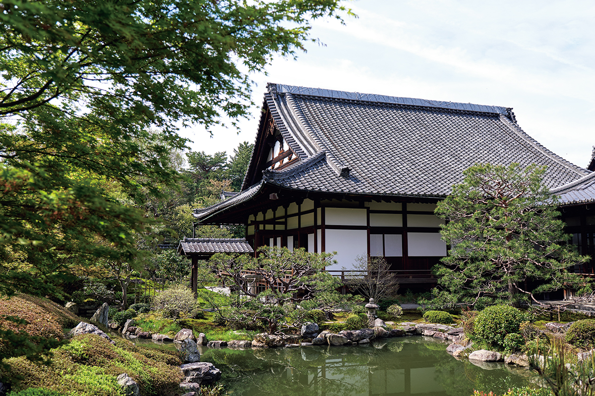
Слово «дзэн» у многих сразу вызывает в памяти дзадзэн и его строгую позу. По словам Торё Ито, если всерьёз заниматься дзадзэном, это уже путь к буддийскому пониманию непостоянства и отсутствия «я». Медитация стоит на ступень раньше. Её можно делать без жёсткой формы, и она становится частью повседневной заботы о себе.
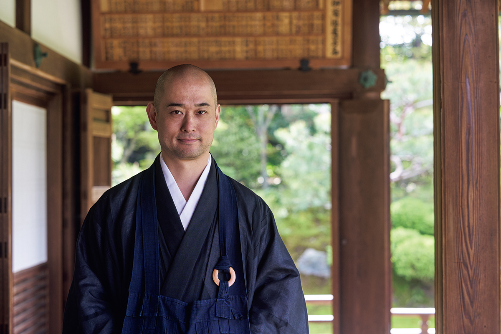
Что же даёт медитация? «Её основа в том, что ты сам можешь привести себя в порядок. Бывает, понимаешь, как правильно, и всё равно тебя несёт по течению. Медитация помогает ненадолго остановиться и заново настроить себя», объясняет он.
«Главное вернуть себе душевный покой и свои настоящие ощущения»
Торё Ито
Опыт
Чай, амулет и дзадзэн без наставника
Дзадзэн под руководством монаха в Рёсоку-ин в 2026 году не проводили, зато входов в медитацию здесь несколько. Первый из них чайная церемония.
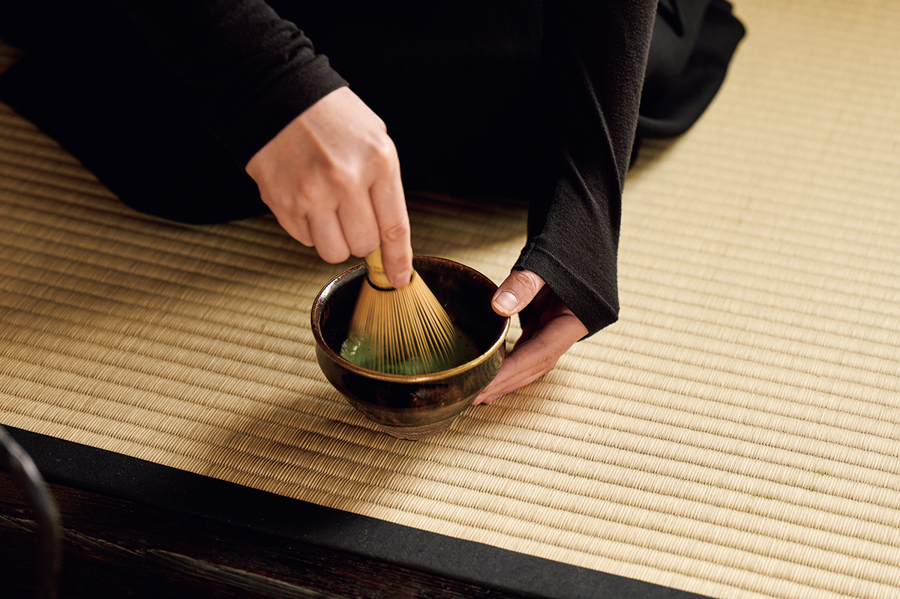
«Уважение важнее этикета. Если говорить совсем прямо, это даже не обязательно должна быть матча. Утварь, приготовленную только для этого гостя, очищают у него на глазах, у него на глазах он пьёт, у него на глазах всё аккуратно убирают. Важно разделить с гостем весь этот ряд действий», говорит Торё Ито.
Необычен и мастер-класс, который в храме называют медитацией через ремесло: изготовление амулета «юваи-мамори». На листке бумаги пишут желание, аккуратно складывают его, кладут в выбранный мешочек и завязывают. На первый взгляд с медитацией это никак не связано. Но, обдумывая своё желание, человек сам собой начинает смотреть внутрь себя, а пока руки заканчивают работу, на душе становится тихо. Начинается всё с простого «как мило» или «интересно попробовать», и это вполне современный способ медитировать. Есть в храме и звуковая медитация: чистый звон буддийского колокольчика успокаивает.
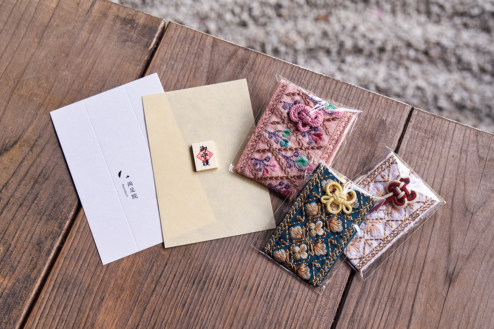
Тем, кто всё же хочет хотя бы раз посидеть в дзадзэне в таком особом месте, предлагают самостоятельный дзадзэн. Монах не наставляет: гость получает конверт с подсказками и садится сам.
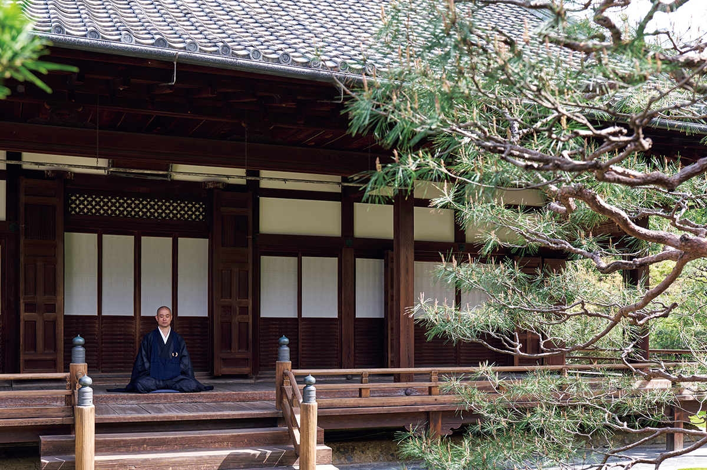
«Когда тебя кто-то учит, легко появляется своего рода зависимость: мне дали хорошее наставление. А важно самому подумать, понять и заметить. Именно эта перемена изнутри и нужна. Храм это ещё и площадка, где человек сам меняет свой взгляд»
Торё Ито
Минималистичная красота дзэн-архитектуры, строгий сад, колыхание ветра и пение птиц. Глядя на них, что-то отпускаешь и что-то находишь, и это ощущение надолго остаётся в памяти и потом подсказывает путь в обычные дни.
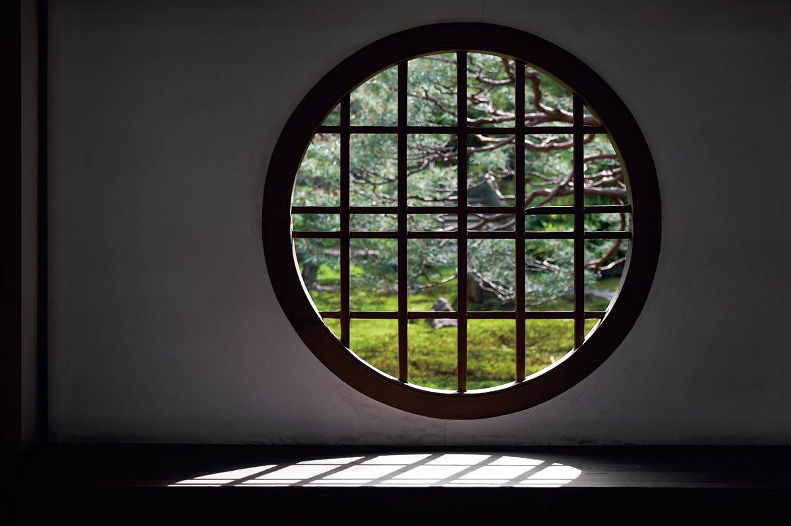
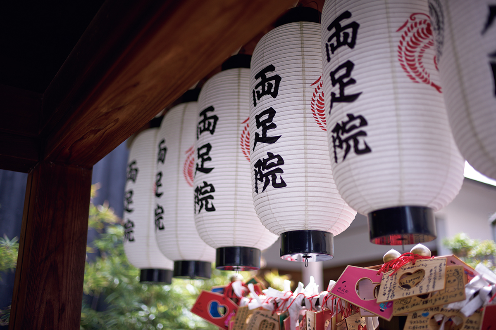
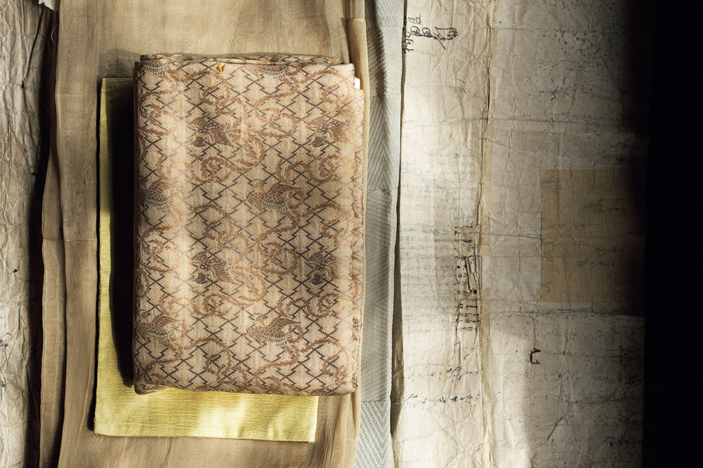
Храм Рёсоку-ин
- Адрес
- префектура Киото, Киото, район Хигасияма, Комацу-тё, 591
- Цены / Вход
- амулет «юваи-мамори» 3000 иен (9:30–16:00, без записи)
- Сайт
- ryosokuin.com
Дома
Медитация в семь шагов
Медитировать можно не только в храме. Если дома сидеть со скрещёнными ногами неудобно, ноги можно вытянуть. Сначала потрясите кистями, чтобы снять напряжение. Стоит отбросить мысль «надо делать именно так» и расслабиться, как ощущения, наоборот, становятся острее. Дальше идите по шагам, а когда привыкнете, добавляйте следующие: прислушивайтесь к звукам и запахам. Так время наедине с собой понемногу входит в обычную жизнь, и к вам возвращаются ваши настоящие ощущения.
1. Сядьте
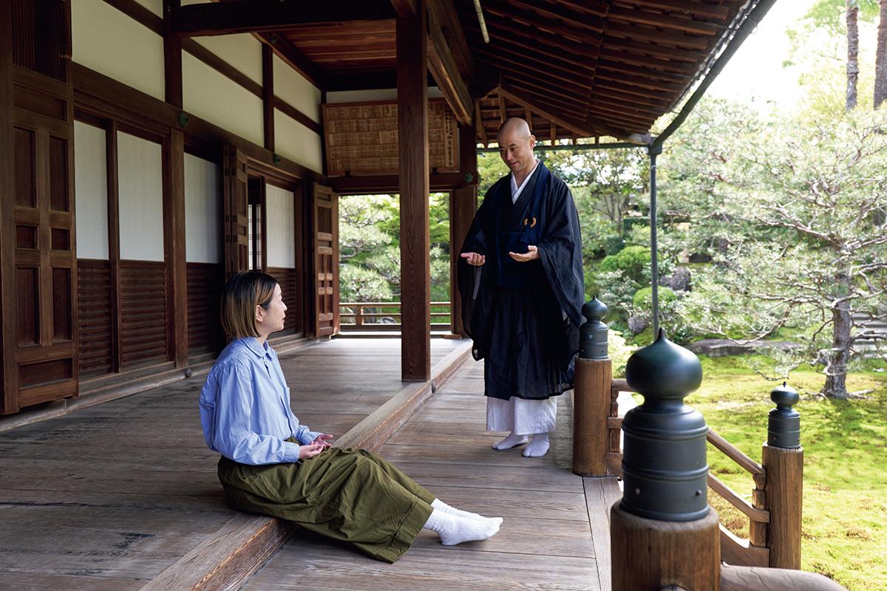
Особая поза дзадзэна у многих вызывает боль, а без привычки в ней трудно расслабиться. Цель не в правильной позе, а в сосредоточенности, поэтому не мучайте себя и садитесь хоть с вытянутыми ногами.
2. Потрясите кистями
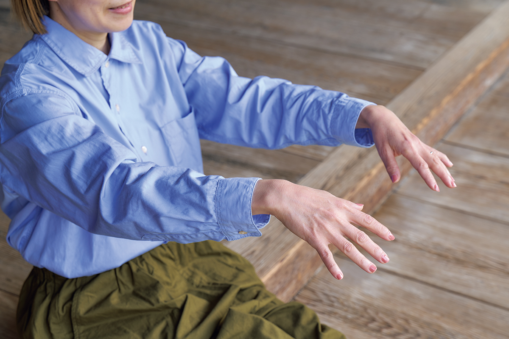
Разведите руки и слегка приподнимите их, расслабьте плечи и потрясите кистями. Скованность уходит, кровь бежит быстрее, и тело с головой готовы раскрыться.
3. Оглядитесь вокруг
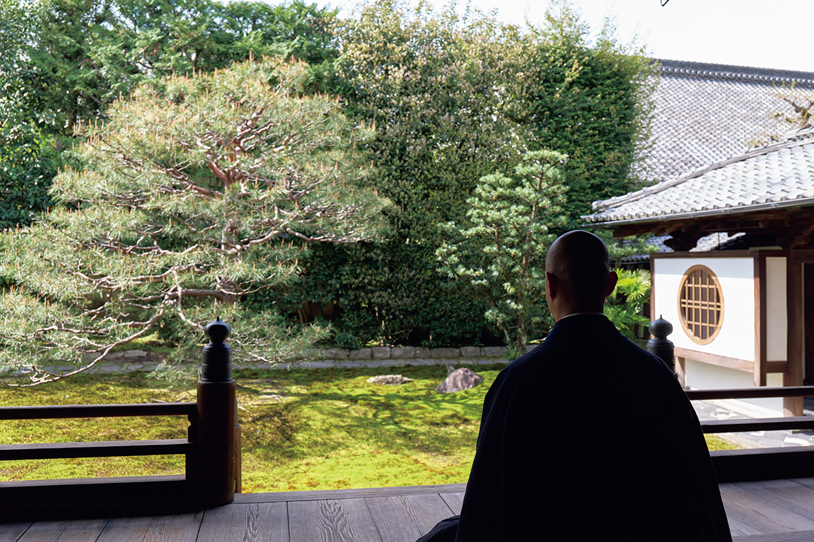
Пора переходить к медитации. Прежде чем закрыть глаза, не спеша осмотритесь. Если, наблюдая, вы заметили что-то новое, запомните, каким оно вам показалось.
4. Закройте глаза
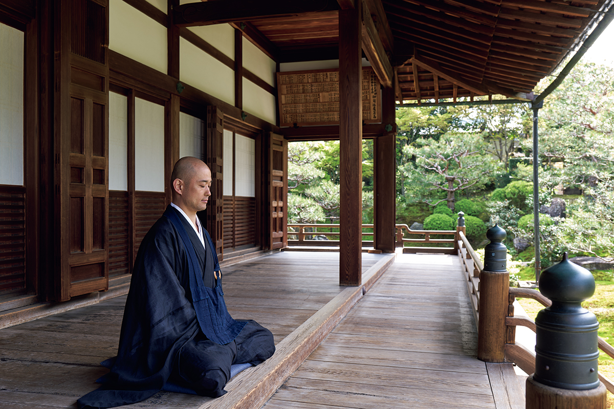
Медленно закройте глаза. Считается, что лучше всего полуприкрытые глаза, когда взгляд падает примерно на метр вперёд, но можно закрыть их и полностью. Выбирайте то, при чём вам спокойнее.
5. Считайте вдохи от одного до десяти
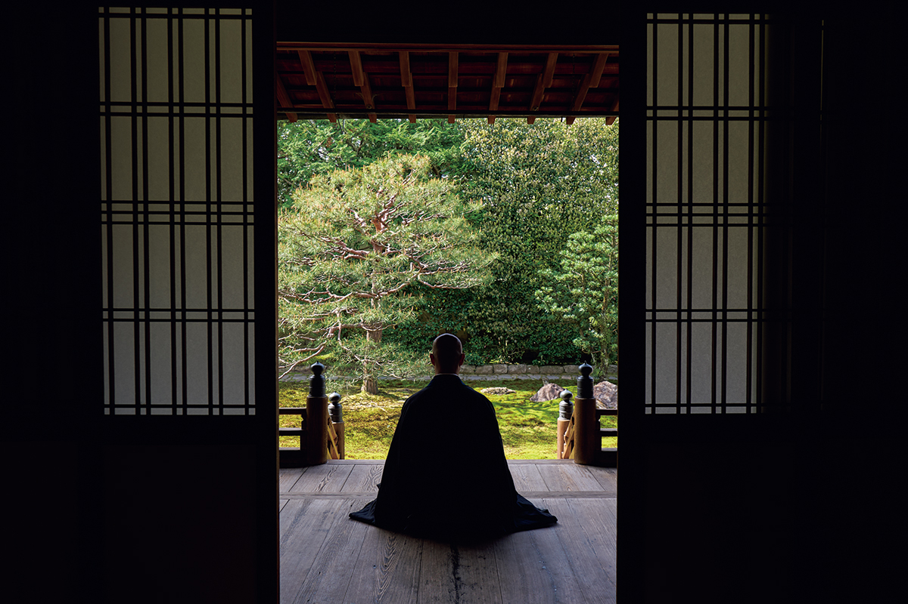
Счёт дыхания про себя успокаивает ум. Считайте по-старинному, на исконно японский лад: «хитоцу, футацу, миццу», а на «то», десяти, начинайте сначала. Удивительно, но становится спокойно.
6. Прислушайтесь
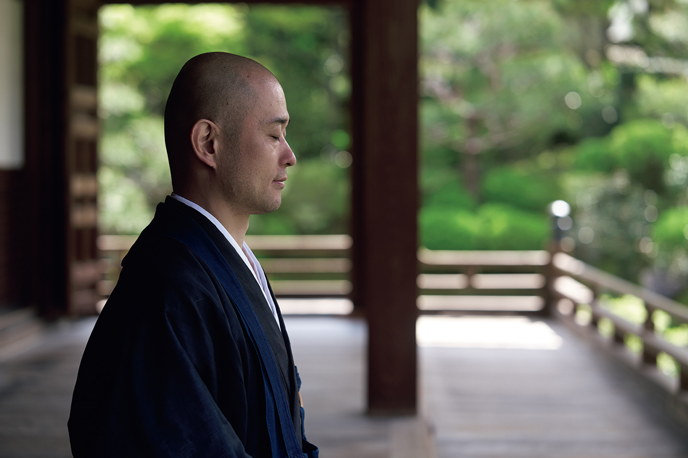
Когда закрываешь глаза и отключаешь зрение, замечаешь, как обостряется слух. Попробуйте представить, какие птицы поют и сколько их.
7. Почувствуйте запах
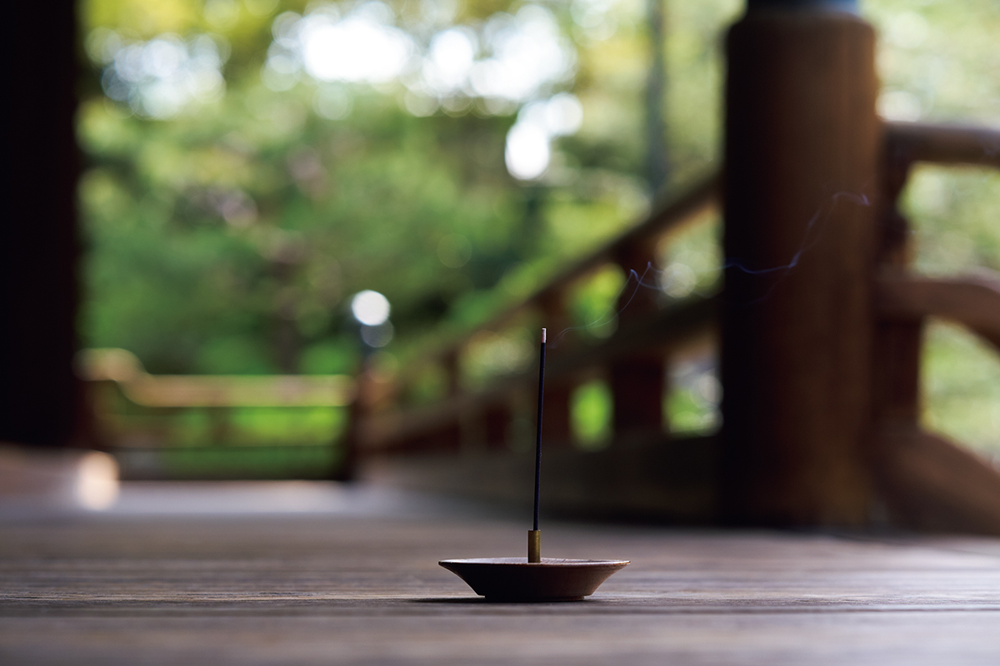
Хорошо, если в комнате ненавязчиво пахнет благовонием. Обоняние обостряется так же, как слух, ловит запах в воздухе и рождает яркие образы.
Каждый день
Медитация в домашних делах
Чтобы сохранить настроенное состояние, Торё Ито предлагает «медитацию в быту». Подсказки к ней, по его словам, рассыпаны в самых обычных домашних делах, и медитировать так можно где угодно.
«Смолоть зёрна и заварить кофе, вытереть посуду полотенцем. В Японии это кажется таким привычным, что и говорить не о чем, но в мире мало кто так делает. Аккуратно уложить коробку с обедом, пропылесосить, сделать какое-то простое домашнее дело как следует. Можно сказать, японцы и так живут медитативно. Даже если на деле всё время спешишь, сами движения очень бережные, и стоит на них чуть сосредоточиться, как это уже время медитации», говорит Торё Ито.
Чайная медитация. Чай чаще всего заваривают в пакетиках, а здесь его заваривают в чайничке. Медитация длится минут пять, с того момента, как закипела вода. Вы заметите, как вкус меняется от количества листьев и температуры воды.
Кофейная медитация. Зёрна мелют на ручной мельнице и внимательно, по капле, проливают водой. Молотый кофе пышно поднимается, и разливается густой аромат. Бережный процесс делает сам напиток ценнее.
Среди кухонных заготовок для медитации лучше всего подходит нарезка соломкой. Если внимательно, от края, тонко и красиво резать ножом, через какое-то время ум затихает и вы целиком погружаетесь в дело.
Техника всё больше избавляет нас от хлопот по дому. Стоит ненадолго забыть о ней и посмотреть в лицо самим действиям. Медитировать не обязательно с закрытыми глазами. Если заново понять смысл домашних дел, которые делаешь по привычке, и стараться сделать их хорошо, ощущения понемногу раскрываются.
Медитация с нарезкой. Морковь или капусту режут ножом тонкой соломкой. Три четверти режут как обычно, а последнюю четверть особенно тщательно, слушая ощущения в руке и стук ножа о доску.
Медитация с посудой. Посуду всё чаще и моют, и сушат в посудомоечной машине. Попробуйте вытереть вручную хотя бы одну любимую тарелку и заново рассмотреть её фактуру и рисунок.
Медитация с мытьём рук. Привычку тщательно мыть руки многие пересмотрели во время пандемии ковида. Хорошо вспеньте мыло и промойте пальцы, места под ногтями и запястья. Когда смоете пену, на душе тоже станет свежо.
Поводом для медитации могут стать и самые простые действия: смотреть, ходить, есть. Ходьба это любимая медитация Торё Ито. Если идти медленнее, чем когда-либо в жизни, начинаешь замечать свои привычки в осанке, положение таза и мышцы корпуса и слышишь, что говорит тело. Мысли тоже проясняются, и даже за короткое время чувствуешь перемену в теле и в голове.
Сейчас все гонятся за экономией времени и не могут оторваться от телефона. Но потратить одну минуту на медитацию или открыть соцсети, решаете вы сами. Если понимаешь, как подойти к медитации, не обязательно делать её каждый день. Можно, например, начинать с неё каждую неделю, а привыкнув, делать чаще. Стоит взглянуть по-новому на время, которое утекает в суете, и настроить себя.
Медитация ходьбой. Этим Торё Ито занимается много лет. Медленно поднимите и опустите правую ногу, а когда она встала, так же медленно поднимите левую. Ходьба в сверхзамедленном темпе раскрывает ощущения.
Медитация взглядом. Смотрите на один предмет одну минуту. Информацию мы получаем за секунду, а через 15 секунд уже скучно. Если повторять эту медитацию, развиваются наблюдательность и воображение.
Медитация за едой. Положите в рот рис и 30 секунд ничего не делайте. Когда ощущения во рту раскроются полностью, медленно жуйте. Даже самый обычный рис покажется особенно вкусным.
Фото: Марико Тая.